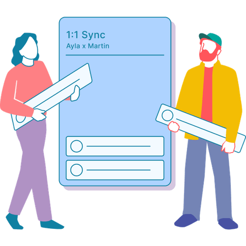

Mit der Academy erhaltet ihr im Business-Plan praxisnahe Lernmodule rund um Facilitation und wirksame Transformation.
Gemeinsam mit 9 Spaces zeigt Plan International Deutschland, wie wertebasiertes Arbeiten Orientierung gibt – nach innen wie nach außen.

Dieses Tool hilft dir dabei, dich gut mit deinen Kolleg*innen zu synchronisieren.
Weniger reden und mehr zuhören: eine Spaziergangsübung zur Anwendung der vier Arten des Zuhörens.
Ein Tool, das dir dabei hilft, nur noch in nützlichen Meetings zu sitzen
Zwei kleine Gewohnheiten, die jeden Arbeitsalltag grundlegend verändern.